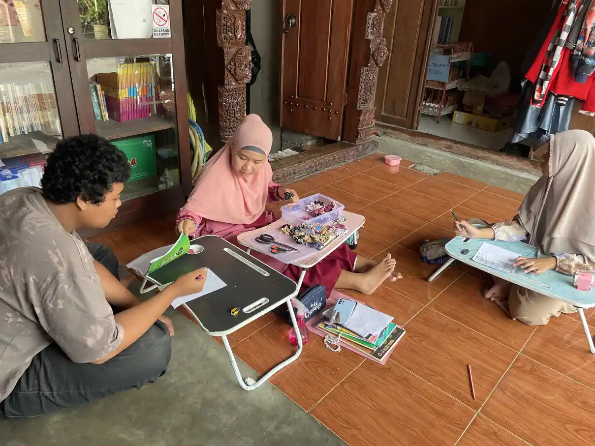
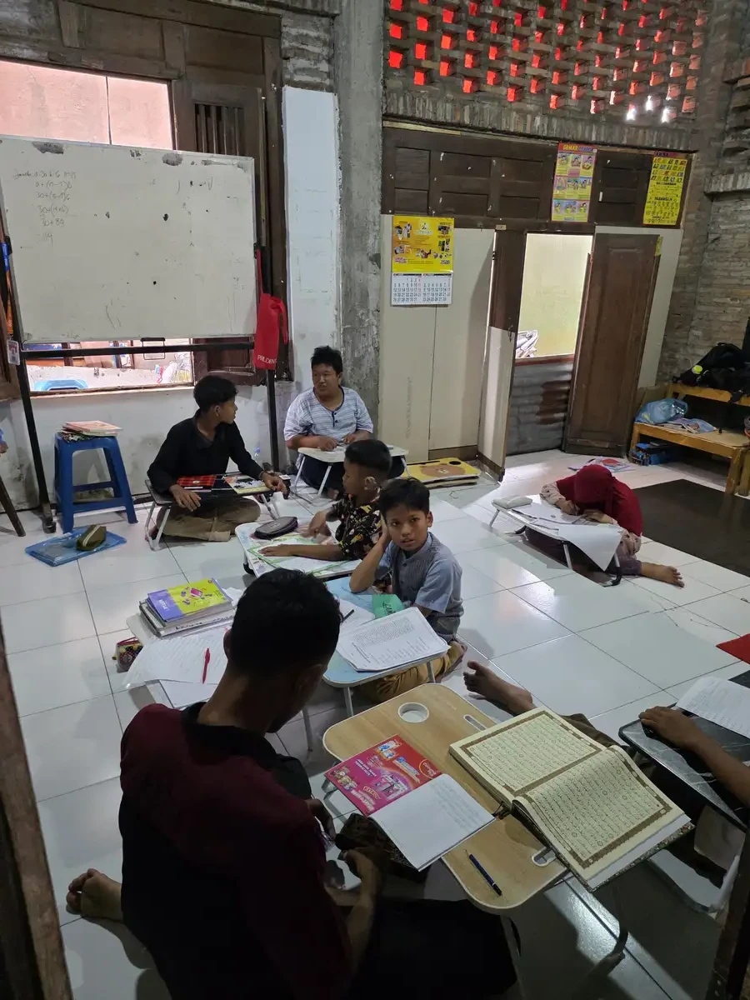
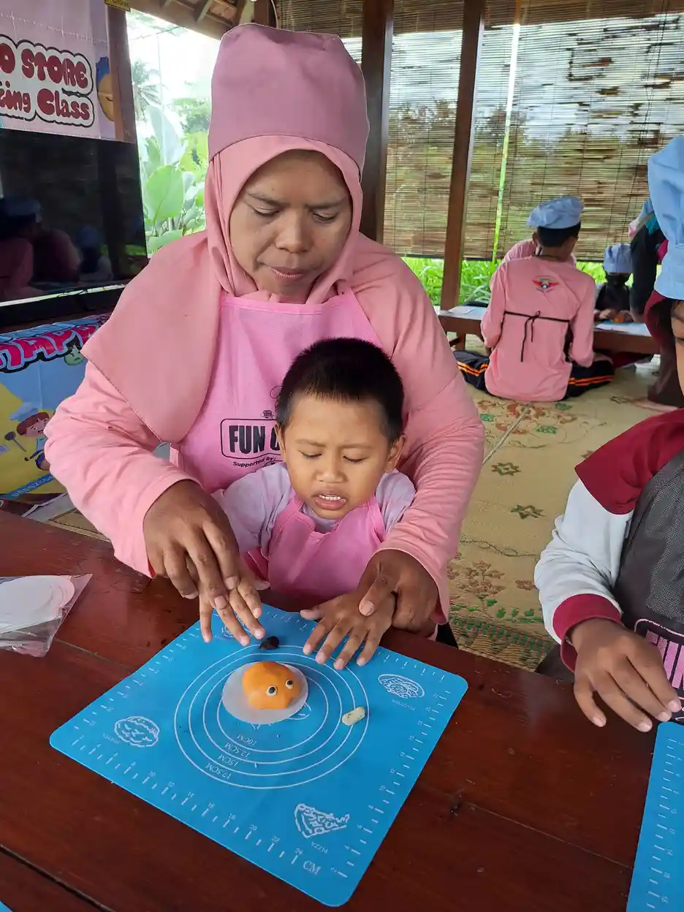

Jawaban singkat: cara mengatasi anak hiperaktif yang paling didukung pedoman adalah pendekatan perilaku yang konsisten di rumah dan di sekolah. Di rumah, itu berarti rutinitas yang jelas, instruksi singkat, pujian untuk perilaku baik, dan konsekuensi yang tenang. Di sekolah, guru memakai sistem penghargaan, kartu laporan harian, jeda istirahat, dan tugas yang jelas. Bila perilaku sangat mengganggu, libatkan dokter atau psikolog. Keputusan obat hanya diambil oleh dokter.
Daftar Isi
- Prinsip dasar sebelum memilih cara
- Di rumah: rutinitas dan lingkungan
- Di rumah: instruksi, pujian, dan konsekuensi
- Menyalurkan energi: gerak, tidur, dan makan
- Di sekolah: kerja sama dengan guru
- Saat anak meledak atau sulit berhenti
- Kapan perlu bantuan profesional
- Merawat diri orang tua
- Pertanyaan yang sering diajukan
Prinsip dasar sebelum memilih cara
Mengatasi anak hiperaktif bukan berarti membuat anak diam. Tujuannya adalah membantu anak mengatur dirinya, sehingga ia bisa belajar, bermain dengan teman, dan tetap aman. Energi anak tidak perlu dimatikan, cukup diarahkan.
NIMH menyebut penanganan standar ADHD meliputi obat dan intervensi psikososial, seperti terapi perilaku kognitif, pelatihan orang tua, dan intervensi di sekolah. CDC menambahkan bahwa terapi perilaku pada anak kecil paling efektif bila dijalankan oleh orang tua. Artinya, orang tua dan guru memegang peran besar, dan peran itu bisa dimulai tanpa menunggu diagnosis.
Pedoman juga membedakan pendekatan menurut usia. Ringkasannya ada di tabel berikut. Tabel ini berlaku untuk anak yang sudah didiagnosis ADHD. Untuk anak yang belum dinilai, langkah perilaku di rumah dan sekolah tetap aman dan bermanfaat.
| Usia anak | Pendekatan yang dianjurkan pedoman | Sumber |
|---|---|---|
| Di bawah 5 tahun | Program pelatihan orang tua berkelompok yang berfokus pada ADHD sebagai penanganan pertama. Obat tidak diberikan tanpa pendapat kedua dari layanan spesialis ADHD anak. | NICE NG87 |
| Di bawah 6 tahun | Pelatihan orang tua dalam manajemen perilaku sebagai langkah pertama, sebelum obat dicoba. | CDC, merujuk AAP |
| 6 tahun ke atas | Gabungan obat dan terapi perilaku, ditambah intervensi perilaku di kelas dan dukungan sekolah. | CDC, merujuk AAP |
Perbedaan batas usia di tabel (5 dan 6 tahun) berasal dari dua pedoman yang berbeda, NICE di Inggris dan AAP di Amerika Serikat. Keduanya sejalan pada satu hal: pada anak kecil, pendekatan perilaku lewat orang tua didahulukan. Pilihan terapi klinis yang lebih rinci dibahas di terapi ADHD pada anak.
Di rumah: rutinitas dan lingkungan yang membantu
Anak dengan perilaku hiperaktif biasanya lebih tenang bila tahu apa yang akan terjadi. CDC menyebut struktur sebagai salah satu inti keterampilan yang diajarkan dalam pelatihan orang tua. Struktur di rumah dimulai dari rutinitas yang sama setiap hari: jam bangun, mandi, makan, belajar, bermain, dan tidur.
Tuliskan atau gambarkan rutinitas itu, lalu tempel di tempat yang mudah dilihat anak. Anak yang belum lancar membaca bisa memakai gambar sederhana. Libatkan anak saat menyusunnya, misalnya memilih gambar atau warna. Anak yang ikut membuat jadwal biasanya lebih mau menjalankannya.
Lingkungan juga berpengaruh. Siapkan satu tempat belajar yang jauh dari televisi dan mainan. Simpan barang yang tidak dipakai di dalam kotak. Siapkan tas sekolah dan seragam sejak malam agar pagi hari tidak penuh tergesa-gesa. Perubahan kecil seperti ini mengurangi jumlah gangguan yang harus dilawan anak setiap hari.
- Satu jadwal harian yang sama, ditempel di dinding atau pintu kulkas.
- Tempat belajar yang tenang, dengan barang seperlunya di atas meja.
- Pengingat waktu yang terlihat, misalnya jam pasir atau timer, untuk pergantian kegiatan.
- Pemberitahuan lebih awal sebelum kegiatan berganti, misalnya "lima menit lagi kita mandi."
- Batas waktu gawai yang jelas dan disepakati bersama, bukan berubah-ubah setiap hari.

Di rumah: instruksi, pujian, dan konsekuensi yang konsisten
CDC menjelaskan bahwa terapis yang baik mengajarkan orang tua keterampilan dan strategi yang memakai penguatan positif, struktur, dan disiplin yang konsisten. Pelatihan ini juga berfokus pada membangun keterampilan pengasuhan dan memperbaiki hubungan orang tua dengan anak. Tiga hal yang paling sering dipraktikkan adalah cara memberi instruksi, cara memuji, dan cara memberi konsekuensi.
Instruksi yang singkat dan jelas
Dekati anak, sentuh bahunya dengan lembut, tatap matanya, lalu beri satu instruksi saja. "Taruh sepatumu di rak" lebih mudah diikuti daripada "Rapikan semua barangmu, lalu cuci tangan, lalu makan." Minta anak mengulangi instruksi dengan kata-katanya sendiri. Bila tugasnya panjang, pecah menjadi langkah kecil dan beri pujian di setiap langkah.
Pujian yang spesifik
Anak yang sering ditegur mudah merasa dirinya selalu salah. Imbangi dengan pujian yang menyebut perilakunya, misalnya "Hebat, kamu menunggu giliran tanpa menyela." Pujian spesifik memberi tahu anak perilaku mana yang perlu diulang. Sebagian keluarga memakai papan bintang atau stiker yang bisa ditukar dengan hadiah kecil yang disepakati bersama.
Konsekuensi yang tenang dan konsisten
Konsekuensi bekerja paling baik bila sudah disepakati sebelumnya, diberikan dengan tenang, dan selalu sama. Contohnya, waktu gawai berkurang bila anak melempar barang. Hindari hukuman fisik. WHO menyebut hukuman fisik meningkatkan masalah perilaku dari waktu ke waktu dan tidak memberi hasil positif. Bila Anda mulai kehilangan kesabaran, ambil jeda sejenak sebelum menanggapi.
Menurut CDC, orang tua biasanya mengikuti 8 sampai 16 sesi bersama terapis untuk mempelajari strategi ini. Anda tetap bisa mulai menerapkannya sekarang, lalu menyempurnakannya bersama profesional. Pendekatan serupa juga dipakai dalam terapi perilaku kognitif anak untuk anak yang lebih besar.
Menyalurkan energi: gerak, tidur, dan makan
Anak yang hiperaktif butuh tempat untuk menyalurkan energinya. WHO menyebut aktivitas fisik dalam jumlah berapa pun lebih baik daripada tidak sama sekali, dan semua kelompok usia sebaiknya membatasi waktu duduk diam. NICE juga meminta tenaga kesehatan menekankan nilai pola makan seimbang, gizi yang baik, dan olahraga teratur bagi anak dengan ADHD.
Jadwalkan waktu bergerak sebelum kegiatan yang menuntut duduk, misalnya bermain di halaman sebelum belajar. Pilih kegiatan yang punya aturan sederhana, seperti bersepeda, berenang, bermain bola, atau menari. Pekerjaan rumah yang melibatkan gerak, seperti menyiram tanaman atau membawa belanjaan, juga bisa menjadi cara menyalurkan energi sekaligus melatih tanggung jawab.
Tidur sama pentingnya. NIMH menyebut tidur sebagai salah satu sasaran penting dalam intervensi dini ADHD. Jaga jam tidur dan bangun yang sama setiap hari, matikan layar sebelum tidur, dan buat rutinitas menjelang tidur yang menenangkan. Panduan lengkapnya ada di gangguan tidur anak ADHD.
Soal makanan, NICE tidak menganjurkan penghapusan pewarna dan bahan tambahan buatan dari makanan sebagai penanganan umum, tetapi meminta tenaga kesehatan menanyakan makanan atau minuman yang tampak memengaruhi perilaku anak. Bila Anda melihat pola tertentu, catat dan diskusikan dengan dokter. Baca juga makanan yang harus dihindari anak ADHD untuk memisahkan fakta dan mitos.

Di sekolah: kerja sama dengan guru
Sekolah adalah tempat anak menghabiskan sebagian besar harinya, jadi kerja sama dengan guru sangat menentukan. CDC menjelaskan bahwa manajemen perilaku di kelas mendorong perilaku positif siswa melalui sistem penghargaan atau kartu laporan harian. Komunikasi harian dengan orang tua lewat kartu laporan itu juga dapat membantu. CDC menyebut pula pelatihan berorganisasi, yang mengajarkan anak mengatur waktu, merencanakan, dan merapikan perlengkapan sekolah.
| Strategi di kelas (CDC) | Contoh penerapan sederhana |
|---|---|
| Umpan balik dan perhatian yang sering untuk perilaku positif | Guru memuji anak setiap kali ia menyelesaikan satu bagian tugas |
| Tugas yang jelas, dicek pemahamannya | Guru meminta anak mengulang instruksi sebelum mulai mengerjakan |
| Memberi jeda istirahat | Anak diberi tugas singkat yang melibatkan gerak, misalnya membagikan buku |
| Alat bantu berorganisasi | Satu map khusus pekerjaan rumah yang selalu dicek di akhir hari |
| Kartu laporan harian | Buku penghubung berisi dua atau tiga target perilaku yang dinilai setiap hari |
CDC juga menyebut bahwa bagi anak dengan ADHD, memusatkan perhatian membutuhkan usaha ekstra dan bisa sangat melelahkan, sehingga jeda istirahat membantu. Di Indonesia, sekolah inklusi dapat menuangkan penyesuaian seperti ini dalam program pembelajaran individual. Strategi mengajar yang lebih rinci untuk guru ada di strategi mengajar anak ADHD di sekolah.
Mulailah dengan pertemuan singkat bersama wali kelas. Sampaikan apa yang sudah berhasil di rumah, dengarkan apa yang guru lihat di kelas, lalu sepakati dua atau tiga target yang sama. Target yang sama di rumah dan sekolah membuat anak menerima pesan yang konsisten. Informasi tentang pendidikan inklusif ada di pendidikan inklusi.

Saat anak meledak atau sulit berhenti
Ada saatnya semua strategi terasa tidak berjalan. Anak menangis, berteriak, atau terus berlari walau sudah diminta berhenti. Pada saat seperti ini, tujuan pertama adalah keselamatan, bukan menang dalam adu argumen.
- Pastikan anak dan orang di sekitarnya aman. Jauhkan benda berbahaya.
- Turunkan suara Anda. Pakai kalimat sangat pendek, misalnya "Berhenti. Duduk di sini."
- Beri anak tempat dan waktu untuk tenang, tanpa penonton dan tanpa ceramah panjang.
- Setelah tenang, bicarakan apa yang terjadi dengan bahasa sederhana dan cari bersama apa yang bisa dilakukan lain kali.
- Catat pemicunya. Lelah, lapar, terlalu ramai, atau pergantian kegiatan yang mendadak sering menjadi pemicu yang berulang.
Bila ledakan emosi sering terjadi atau membahayakan, ceritakan kepada dokter atau psikolog. Catatan pemicu yang Anda buat akan membantu mereka menyusun rencana yang tepat. Bila anak juga punya kepekaan sensori yang tinggi, misalnya terganggu suara atau sentuhan, artikel sensori integrasi bisa menjadi bacaan tambahan.
Kapan perlu bantuan profesional
Strategi di rumah dan sekolah sering membantu, tetapi tidak selalu cukup. Carilah bantuan profesional bila perilaku anak terus mengganggu belajar dan pergaulan, membahayakan keselamatan, atau membuat keluarga kewalahan. Mulailah dari dokter anak, yang bila perlu akan merujuk ke psikolog anak, psikiater anak, atau dokter spesialis tumbuh kembang. Kemenkes menyebut psikoterapi untuk ADHD dapat dilakukan oleh psikiater atau psikolog, biasanya disertai pelatihan keterampilan.
Bila diagnosis ADHD ditegakkan, dokter dapat membicarakan pilihan obat. CDC menjelaskan bahwa untuk anak 6 tahun ke atas, AAP menganjurkan gabungan obat dan terapi perilaku. Pada anak yang lebih kecil, pendekatan perilaku didahulukan. Jangan memberi obat, suplemen, atau terapi alternatif tanpa berkonsultasi dengan dokter. Alur pemeriksaan di Indonesia dijelaskan di diagnosis ADHD di Indonesia, dan sisi klinis ADHD secara umum ada di ADHD adalah.
Bila Anda belum yakin apakah anak hanya sangat aktif atau perlu dinilai, baca dulu anak aktif atau hiperaktif. Panduan langkah demi langkah dari sudut pandang orang tua ada di anakku hiperaktif.

Merawat diri orang tua
Mendampingi anak yang sangat aktif setiap hari menguras tenaga dan emosi. Orang tua yang lelah lebih mudah kehilangan kesabaran, dan itu wajar. CDC mencatat bahwa pelatihan orang tua juga bertujuan memperbaiki hubungan orang tua dan anak, sehingga kesejahteraan orang tua ikut menjadi bagian dari penanganan.
Bagi tugas dengan pasangan atau anggota keluarga lain. Sisihkan waktu singkat untuk diri sendiri. Bergabunglah dengan kelompok orang tua yang punya pengalaman serupa. Bila stres terasa berat, jangan ragu mencari bantuan. Artikel mengelola stres orang tua anak berkebutuhan khusus berisi langkah praktis yang bisa dicoba. Untuk memahami perilaku hiperaktif secara menyeluruh, kembali ke panduan utama hiperaktif adalah.
- Hiperaktif adalah: pengertian, ciri, dan penanganan (panduan utama)
- Hiperaktif artinya apa dan tanda awalnya
- Anakku hiperaktif: panduan langkah untuk orang tua
- Anak aktif atau hiperaktif: cara membedakannya
Seri ini membahas perilaku hiperaktif sehari-hari. Untuk sisi diagnosis klinis, baca ADHD adalah dan alur diagnosis ADHD di Indonesia.
Pertanyaan yang Sering Diajukan
Bagaimana cara mengatasi anak hiperaktif di rumah?
Mulailah dari rutinitas harian yang konsisten, instruksi singkat satu per satu, pujian yang spesifik untuk perilaku baik, dan konsekuensi yang tenang serta konsisten. CDC menyebut penguatan positif, struktur, dan disiplin yang konsisten sebagai inti keterampilan dalam pelatihan orang tua. Sediakan juga waktu bergerak yang cukup dan jam tidur yang teratur.
Bagaimana guru menangani anak hiperaktif di kelas?
CDC menyarankan manajemen perilaku di kelas melalui sistem penghargaan atau kartu laporan harian, pelatihan keterampilan berorganisasi, umpan balik yang sering untuk perilaku positif, tugas yang jelas, jeda istirahat, dan alat bantu seperti map pekerjaan rumah. Di sekolah inklusi, penyesuaian ini dapat dituangkan dalam program pembelajaran individual.
Apakah anak hiperaktif harus minum obat?
Tidak selalu, dan keputusan obat hanya diambil oleh dokter. CDC menjelaskan bahwa untuk anak di bawah 6 tahun, terapi perilaku melalui pelatihan orang tua dianjurkan sebagai langkah pertama sebelum obat. Untuk anak 6 tahun ke atas, AAP menganjurkan gabungan obat dan terapi perilaku bila diagnosis ADHD sudah ditegakkan. NICE juga meminta obat tidak diberikan pada anak di bawah 5 tahun tanpa pendapat spesialis kedua.
Apakah anak hiperaktif boleh dipukul agar jera?
Tidak. WHO menyebut hukuman fisik meningkatkan masalah perilaku dari waktu ke waktu dan tidak memberi hasil positif. Gunakan konsekuensi yang tenang dan konsisten, misalnya kehilangan waktu bermain gawai, serta perkuat perilaku baik dengan pujian. Bila Anda merasa kewalahan, mintalah bantuan profesional atau pelatihan pengasuhan.
Aktivitas apa yang cocok untuk anak hiperaktif?
Pilih aktivitas yang menyalurkan energi dan punya aturan sederhana, seperti bersepeda, berenang, bermain bola, menari, atau membantu pekerjaan rumah yang melibatkan gerak. WHO menyebut aktivitas fisik dalam jumlah berapa pun lebih baik daripada tidak sama sekali dan menganjurkan semua kelompok usia membatasi waktu duduk diam. Sesuaikan dengan minat anak agar ia mau melakukannya rutin.
Apakah ada makanan yang harus dihindari anak hiperaktif?
NICE menekankan pentingnya pola makan seimbang, gizi yang baik, dan olahraga teratur, tetapi tidak menganjurkan penghapusan pewarna dan bahan tambahan buatan sebagai penanganan umum. Bila Anda melihat makanan tertentu tampak memengaruhi perilaku anak, catat dan diskusikan dengan dokter. Pembahasan rinci ada di artikel makanan yang harus dihindari anak ADHD.
Berapa lama terapi perilaku untuk anak hiperaktif?
CDC menjelaskan bahwa dalam pelatihan orang tua, orang tua biasanya mengikuti 8 sampai 16 sesi bersama terapis untuk mempelajari strategi membantu anak. Lamanya bisa berbeda tergantung kebutuhan anak dan keluarga. Hasil yang bertahan biasanya datang dari penerapan strategi secara konsisten di rumah dan sekolah.
Apakah anak hiperaktif bisa sekolah di sekolah umum?
Banyak anak dengan perilaku hiperaktif dapat belajar di sekolah umum atau sekolah inklusi dengan dukungan yang tepat. Yang penting adalah kerja sama orang tua dan guru, penyesuaian cara belajar, dan komunikasi rutin tentang perkembangan anak. Bicarakan kebutuhan anak dengan sekolah sejak awal agar dukungan bisa disiapkan.
Bacaan Terkait
Tentang artikel ini
- Ditulis oleh: Tim YUKA (Yayasan Ukhuwah Kaffah Amanatullah), pengelola Sekolah Inklusi Taruna Imani, Sleman, Yogyakarta.
- Dasar rujukan: cdc.gov, nice.org.uk, nimh.nih.gov, who.int, keslan.kemkes.go.id. Semua rujukan ditautkan langsung di bagian sumber di bawah artikel ini.
- Terbit: 11 Oktober 2026. Pembaruan terakhir: 11 Oktober 2026.
- Status tinjauan medis: artikel ini disusun oleh tim pendidik, belum ditinjau oleh dokter berlisensi. Tinjauan oleh tenaga medis berkredensial sedang kami siapkan dan status ini akan diperbarui di halaman ini begitu selesai. Alur tinjauan dan koreksi dijelaskan di Kebijakan Editorial YUKA. Untuk keputusan diagnosis atau terapi, rujuklah pada dokter anak, psikiater anak, atau psikolog perkembangan.
- Kebijakan koreksi: jika Anda menemukan klaim yang keliru atau sumber yang tidak cocok, beri tahu kami lewat halaman kontak. Kami memperbaiki isinya dan mencantumkan catatan koreksi secara terbuka.
Sumber dan Referensi
- CDC: Treatment of ADHD
- CDC: ADHD Treatment Recommendations, Behavior Therapy
- CDC: ADHD in the Classroom
- NICE Guideline NG87: Attention deficit hyperactivity disorder, diagnosis and management (Recommendations)
- National Institute of Mental Health (NIMH): Attention-Deficit/Hyperactivity Disorder
- WHO: Physical activity (fact sheet)
- WHO: Corporal punishment and health (fact sheet)
- Kemenkes, Ditjen Kesehatan Lanjutan: Apa Itu ADHD (Attention Deficit Hyperactivity Disorder)
Catatan: Artikel ini bersifat edukasi umum dan bukan pengganti konsultasi dengan psikolog, tenaga kesehatan, atau petugas layanan sosial resmi. Sumber resmi diperiksa pada 11 Oktober 2026. Ringkasan ini membantu orang tua dan guru mengamati perilaku anak, tetapi tidak dapat dipakai untuk menetapkan diagnosis.